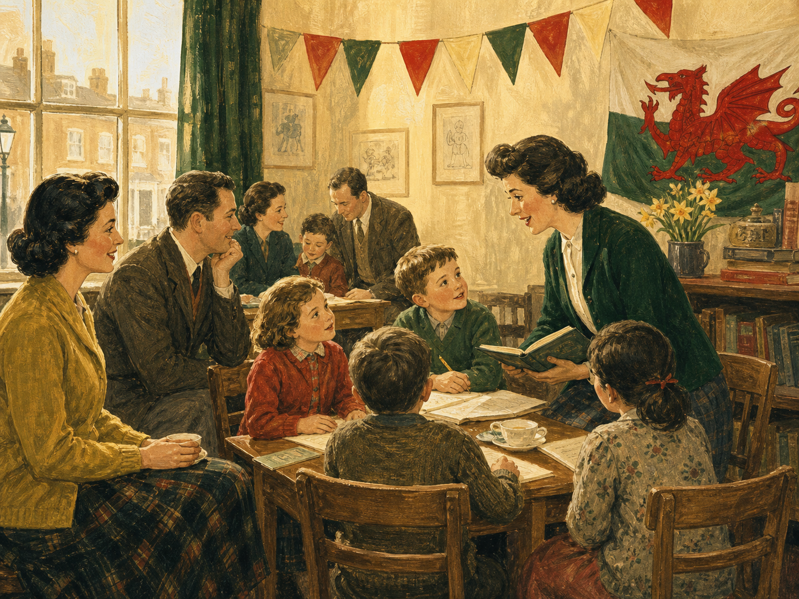

1958

Y dechrau
Rhieni'n creu lle i'r Gymraeg ffynnu.
Dechreuodd Ysgol Gymraeg Llundain yn 1958 fel ymateb uniongyrchol i ddyhead rhieni Cymraeg yn Llundain: rhoi cyfle i'w plant ddysgu, chwarae a pherthyn trwy'r Gymraeg.
Darllen mwy
Roedd y dechrau'n fach ond yn bwrpasol: dosbarthiadau, teuluoedd, gwirfoddolwyr a'r syniad cryf fod iaith yn perthyn i fywyd bob dydd.